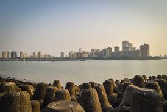

marine drive
M A R I N E D R I V E
Marine Drive, officially known as Netaji Subhash Chandra Bose Marg, is a 3 kilometre long boulevard which stretches from Nariman Point to Malabar Hills.
It is an inverted 'C'-shaped six lane road in southern Mumbai, running along the coast of the Arabian Sea.
Famed for a large number of Art Deco buildings that were built by wealthy Parsis during the early 20th century, this necklace-shaped stretch is worth exploring.
Listed among the most posh areas of the city, Marine Drive features many high-end hotels and restaurants.
Towards the north of Marine Drive is the popular Chowpatty Beach.
At night, with the street lights are on, the entire road appears like a dazzling diamond neckpiece, hence its also referred as 'Queen's Necklace'.
The highlight of this place is the beautiful promenade, which is lined with several palm trees.
Considered as one of world's largest viewing gallery, Marine Drive attracts millions of tourists every year.
LOCATION:
Girgaon, Mumbai, 400007, Maharashtra


HOTELS:
THE OBEROI,MUMBAI
Address: Nariman Point, Mumbai, Maharashtra 400021
Phone:022 6632 5757
SEA GREEN HOTEL
Address: 145, Marine Drive, Mumbai, Maharashtra 400020
Phone:022 6633 6525
INTERCONTINENTAL HOTEL
Address: 135, Marine Drive, Mumbai, Maharashtra 400020
Phone:022 3987 9999
BANKS/ATM:

KOTAK MAHINDRA BANK ATM
Address: Marine Line, Ticket Window down, Marine Drive Flyover, Marine Lines, Mumbai, Maharashtra 400 002
Phone:1800 102 6022
Punjab National Bank ATM
Address: Marine Drive, Indian Oil Petrol Pump, Marine Drive Flyower, Marine Lines, Mumbai, 400002
Phone:1800 180 2222
Axis Bank ATM
Address: Mumbai Police, Gymkhana, 473, NS Road, Marine Drive, Mumbai, Maharashtra 400002
Phone:1800 209 5577
HOSPITALS:
Bombay Hospital And Medical Research Centre
Bombay Hospital Trust, Road No 12, Marine Lines, Mumbai - 400020, Near Liberty Cinema
Phone:+(91)-22-22067676, 40511111